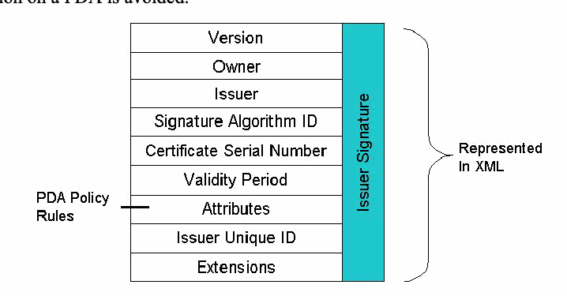
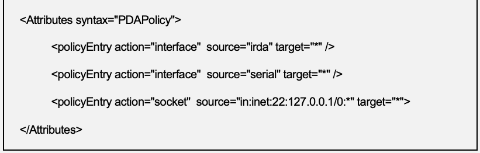

NIST IR 6981 日本語訳
英語タイトル : Policy Expression and Enforcement for Handheld Devices日本語タイトル : ハンドヘルドデバイスのためのポリシーの表現と強制
公開日 : 2003-04-01
原文URL : https://csrc.nist.gov/pubs/ir/6981/final
翻訳編集 : 自動生成（有志による非公式の日本語訳）, 原文取得日 : 2026-10-31, 訳文 : 219 / 222 ブロック
[要約] NIST IR 6981 は、携帯情報端末（PDA）などのハンドヘルドデバイス上のユーザー権限を管理するためのフレームワークを説明した報告書です。このアプローチは、エンタープライズのセキュリティ担当者が PDA のグループ向けと個人向けのセキュリティポリシーを管理し強制することを支援し、ユーザーが組織のセキュリティポリシーに自動的に準拠するよう制約するのに役立つことを目指しています。報告書は、ポリシー証明書、ポリシーの表現、ポリシー管理、ポリシーの強制を順に説明し、利点と欠点、関連研究を論じています。フレームワークの概念実証の実装の詳細も示しており、付録に Enroller アプレットの APDU と、ポリシー強制の起動シナリオを収めています。
［NIST のロゴ。公的な標章のため、この非公式サイトには掲載していません。原本 PDF を参照してください。］
Interagency Report 6981
省庁間報告書 6981
Policy Expression and Enforcement for Handheld Devices
ハンドヘルドデバイスのためのポリシーの表現と強制
Wayne Jansen
Wayne Jansen
Tom Karygiannis
Tom Karygiannis
Vlad Korolev
Vlad Korolev
Serban Gavrila
Serban Gavrila
Michaela Iorga
Michaela Iorga
NIST Interagency Report - 6981
NIST 省庁間報告書 - 6981
Policy Expression and Enforcement for Handheld Devices
ハンドヘルドデバイスのためのポリシーの表現と強制
Wayne Jansen
Wayne Jansen
Tom Karygiannis
Tom Karygiannis
Vlad Korolev
Vlad Korolev
Serban Gavrila
Serban Gavrila
Michaela Iorga
Michaela Iorga
COMPUTER SECURITY
Computer Security Division
コンピュータセキュリティ部門
Information Technology Laboratory
情報技術研究所
National Institute of Standards and Technology
国立標準技術研究所
Gaithersburg, MD 20988-8930
Gaithersburg, MD 20988-8930
April 2003
2003年4月
U.S. Department of Commerce Donald L. Evans, Secretary
米国商務省 Donald L. Evans 長官
Technology Administration Phillip J. Bond, Under Secretary of Commerce for Technology
技術管理局 Phillip J. Bond、商務次官（技術担当）
National Institute of Standards and Technology Arden L. Bement, Jr., Director
国立標準技術研究所 Arden L. Bement, Jr.、所長
Reports on Computer Systems Technology
コンピュータシステム技術に関する報告書
The Information Technology Laboratory (ITL) at the National Institute of Standards and Technology (NIST) promotes the U.S. economy and public welfare by providing technical leadership for the Nation’s measurement and standards infrastructure. ITL develops tests, test methods, reference data, proof of concept implementations, and technical analysis to advance the development and productive use of information technology. ITL’s responsibilities include the development of technical, physical, administrative, and management standards and guidelines for the cost-effective security and privacy of sensitive unclassified information in Federal computer systems. This Interagency Report Discusses ITL’s research, guidance, and outreach efforts in computer security, and its collaborative activities with industry, government, and academic organizations.
国立標準技術研究所（NIST）の情報技術研究所（ITL）は、国の計測・標準の基盤に対して技術面での指導力を発揮することにより、米国の経済と公共の福祉を促進しています。ITL は、情報技術の開発と有効な活用を推進するため、試験、試験方法、参照データ、概念実証の実装、技術分析を開発しています。ITL の責務には、連邦政府のコンピュータシステムにおける機微な非機密情報のセキュリティとプライバシーを費用対効果よく確保するための、技術的、物理的、管理的および運営管理上の標準とガイドラインの策定が含まれます。この省庁間報告書は、コンピュータセキュリティに関する ITL の研究、ガイダンス、アウトリーチの取り組み、ならびに産業界、政府、学術機関との共同活動について論じています。
National Institute of Standards and Technology Interagency Report 6981 19 pages (April 2003)
国立標準技術研究所 省庁間報告書 6981 19ページ（2003年4月）
Certain commercial entities, equipment, or materials may be identified in this document in order to describe an experimental procedure or concept adequately. Such identification is not intended to imply recommendation or endorsement by the National Institute of Standards and Technology, nor is it intended to imply that the entities, materials, or equipment are necessarily the best available for the purpose.
原本PDFの抜粋画像

本書では、実験の手順や概念を適切に説明するため、特定の商業的な事業体、機器、または材料を挙げている場合があります。このような記載は、国立標準技術研究所による推奨や支持を意味するものではなく、それらの事業体、材料、機器が当該目的に利用できる最良のものであることを意味するものでもありません。
Table of Contents
目次
Policy Expression and Enforcement for Handheld Devices
ハンドヘルドデバイスのためのポリシーの表現と強制
Abstract
概要
The use of mobile handheld devices, such as Personal Digital Assistants (PDAs) and tablet computers, within the workplace is expanding rapidly. These devices are no longer viewed as coveted gadgets for early technology adopters, but instead have become indispensable tools that offer competitive business advantages for the mobile workforce. While providing productivity benefits, the ability of these devices to store and transmit corporate information through both wired and wireless networks poses potential risks to an organization’s security. This paper describes a framework for managing user privileges on handheld devices. The approach is aimed at assisting enterprise security officers in administering and enforcing group and individual security policies for PDAs, and helping constrain users to comply automatically with their organization’s security policy. Details of a proof-of-concept implementation of the framework are also provided.
携帯情報端末（PDA）やタブレットコンピュータなどのモバイルハンドヘルドデバイスの職場での使用は、急速に拡大しています。これらのデバイスは、もはや新技術の早期採用者が欲しがる目新しい機器とは見なされておらず、モバイルワーカーに競争上の優位性をもたらす不可欠なツールとなっています。生産性向上の利点をもたらす一方で、これらのデバイスが有線と無線の両方のネットワークを通じて企業情報を保存・送信できることは、組織のセキュリティに潜在的なリスクをもたらします。本稿では、ハンドヘルドデバイス上のユーザー権限を管理するためのフレームワークを説明します。このアプローチは、企業のセキュリティ担当者が PDA 向けのグループ別および個人別のセキュリティポリシーを管理し、強制するのを支援するとともに、ユーザーが組織のセキュリティポリシーに自動的に従えるよう支援することを目的としています。このフレームワークの概念実証の実装の詳細も示します。
Keywords: Security Policy, PDA, Handheld Devices, Digital Certificates
キーワード: セキュリティポリシー, PDA, ハンドヘルドデバイス, デジタル証明書
Introduction
はじめに
Wireless handheld devices, such as PDAs, enhance employee productivity by enabling the mobile workforce to communicate with customers and colleagues, access enterprise data, and conduct electronic commerce transactions while away from their offices. Digital cellular phones, now almost a necessity for today’s workforce, are incorporating PDA functionality, while at the same time, PDAs are assimilating cellular phone capabilities as add-on or integrated modules. As the capabilities of handheld devices converge and prices become more affordable, these devices are likely to continue to find new applications in many sectors such as medical, financial, manufacturing, defense, and law enforcement.
PDA などの無線ハンドヘルドデバイスは、モバイルワークフォースが、オフィスを離れている間に、顧客や同僚と連絡を取り、エンタープライズのデータにアクセスし、電子商取引のトランザクションを行えるようにすることで、従業員の生産性を高めます。今日の労働力にとってほとんど必需品となったデジタル携帯電話には PDA の機能が組み込まれつつあり、同時に PDA も、追加モジュールまたは一体型のモジュールとして携帯電話の機能を取り込んでいます。ハンドヘルドデバイスの機能が収束し、価格がより手頃になるにつれて、これらのデバイスは、医療、金融、製造、防衛、法執行などの多くの分野で、新しい用途を見出し続けるでしょう。
While mobile computing opens up countless new applications to enhance productivity, it also raises a number of security concerns [Bro, Joh01, Bea01, Gue01]. PDAs increasingly retain corporate information, but unlike their desktop counterparts, they lie at the periphery of organizational controls and oversight. Limited computing power, memory, interfaces, and battery life impose constraints on the practicality of applying many types of safeguards. Their small size and mobility also leads to greater exposure to theft or misuse in the field.
モバイルコンピューティングは、生産性を高める無数の新しい用途を切り開く一方で、いくつかのセキュリティ上の懸念も提起します [Bro, Joh01, Bea01, Gue01]。PDA は、企業の情報を保持することが増えていますが、デスクトップの対応物とは異なり、組織の統制と監督の周縁部にあります。限られた計算能力、メモリ、インタフェース、バッテリー寿命は、多くの種類の保護措置を適用する実用性に制約を課します。また、小型で持ち運べることから、現場での盗難や悪用にさらされる度合いも高くなります。
Many of the most serious security concerns stem from the variety of ways in which a PDA can interact with other computing resources. Typically, these devices are equipped with the capability to communicate wirelessly over limited distances to other devices using infrared or radio signals. Moreover, many users are unaware of the risks associated with the use of these devices within and outside an enterprise. For example, a business associate could unknowingly beam a Trojan horse application from her PDA to a colleague’s PDA through an IrDA port, and contaminate it. The victim could subsequently spread the malware to the corporate network when synchronizing the PDA to a desktop or notebook computer. Given that the malware was not analyzed by the corporate firewall, the PDA may inadvertently serve as a back channel through which network vulnerabilities are exploited. Similarly, a user could browse the Internet using a third party wireless ISP, independent from the wired infrastructure of the organization, and download or upload data or applications in violation of the corporate security policy. In short, a PDA is exposed to multiple risks associated with external communications and interfaces over which the corporate security officer cannot exercise any control.
最も深刻なセキュリティ上の懸念の多くは、PDA が他の計算資源とやり取りできる方法が多様であることに起因します。通常、これらのデバイスは、赤外線や無線信号を使って、限られた距離で他のデバイスと無線通信する能力を備えています。さらに、多くのユーザーは、エンタープライズの内外でこれらのデバイスを使用することに伴うリスクに気付いていません。たとえば、取引先の人が、気付かないまま、自分の PDA から同僚の PDA に、IrDA ポートを通じてトロイの木馬アプリケーションをビームで送り、感染させる可能性があります。被害者は、その後、PDA をデスクトップまたはノートブックコンピュータと同期するときに、マルウェアを企業ネットワークに拡散させる可能性があります。マルウェアが企業のファイアウォールで分析されていなかった場合、PDA は、ネットワークの脆弱性を悪用するための裏の経路として、意図せずに機能する可能性があります。同様に、ユーザーは、組織の有線インフラストラクチャから独立した、第三者の無線 ISP を使ってインターネットを閲覧し、企業のセキュリティポリシーに違反して、データやアプリケーションをダウンロードまたはアップロードする可能性があります。要するに、PDA は、企業のセキュリティ担当者が何の制御も及ぼせない外部との通信とインタフェースに関連する、複数のリスクにさらされています。
To reduce or eliminate common risks associated with handheld devices, an enterprise security officer would ideally have the means to express, monitor, and enforce corporate security policy effectively, particularly over external communications and interfaces. The following sections describe a general framework for managing and enforcing PDA security policies. The description includes details of a proof-of-concept implementation of the framework, which builds on earlier work in this area [Jan02]. The aim of the framework is twofold: to assist enterprise security officers in setting, monitoring, and enforcing PDA security policies, and to help users easily comply with assigned policies.
ハンドヘルドデバイスに関連する一般的なリスクを低減または排除するために、エンタープライズのセキュリティ担当者は、特に外部との通信とインタフェースについて、企業のセキュリティポリシーを効果的に表現、監視、強制する手段を持つことが理想的です。以下の節では、PDA のセキュリティポリシーを管理し強制するための一般的なフレームワークを説明します。この説明には、この分野での先行する作業 [Jan02] を土台とした、フレームワークの概念実証の実装の詳細が含まれます。このフレームワークの目的は 2 つあります。エンタープライズのセキュリティ担当者が PDA のセキュリティポリシーを設定、監視、強制するのを支援すること、そしてユーザーが割り当てられたポリシーに容易に準拠できるようにすることです。
Overview
概要
A key element of the proposed framework is the use of digital certificates called policy certificates, which convey policy settings assigned to a user by some policy-setting authority, such as an enterprise security officer. A policy certificate, as typical of any digital certificate, contains elements identifying the issuer, its period of validity, and other relevant information, all cryptographically signed by the issuer. Policy certificates are linked to X509 identity certificates. Consequently, our approach relies on the availability of an X.509 Public Key Infrastructure for managing identity certificates. Other components of our framework include an enrollment station, a policy update station, a PDA equipped with a smart card reader and policy enforcement software, as illustrated in Figure 1. The approach is straightforward – smart cards are used to convey certificates, issued to a user at an enrollment or update station, to an appropriately equipped PDA where they are enforced. The PDA maintains a highly restrictive default policy in the absence of a smart card bearing a valid set of credentials. From the user’s perspective, the smart card is simply a token that enables access to the PDA.
提案するフレームワークの重要な要素は、ポリシー証明書と呼ばれるデジタル証明書の使用です。これは、エンタープライズのセキュリティ担当者など、何らかのポリシー設定権限者によってユーザーに割り当てられたポリシー設定を伝えます。ポリシー証明書は、一般的なデジタル証明書と同様に、発行者、有効期間、その他の関連情報を識別する要素を含み、それらすべてに発行者が暗号学的な署名を付します。ポリシー証明書は X.509 識別証明書にリンクされます。したがって、私たちのアプローチは、識別証明書を管理するための X.509 公開鍵基盤が利用可能であることに依存します。図 1 に示すように、フレームワークのその他の構成要素には、登録ステーション、ポリシー更新ステーション、スマートカードリーダーとポリシー強制ソフトウェアを備えた PDA があります。このアプローチは単純です。スマートカードを使って、登録または更新ステーションでユーザーに発行された証明書を、適切な装備を備えた PDA に伝え、そこで強制します。有効な認証情報一式を記録したスマートカードがない場合、PDA は非常に制限的な既定のポリシーを維持します。ユーザーから見ると、スマートカードは PDA へのアクセスを可能にする単なるトークンです。
［第三者の画像。第三者の著作物のため、この非公式サイトには掲載していません。原本 PDF を参照してください。］
Figure 1: Security Policy Enforcement Components1
図 1: セキュリティポリシー強制のコンポーネント1
The policy enforcement process begins with enrollment of a user. During enrollment, a security officer uses the enrollment station to generate an identity certificate and policy certificate for the user. The certificates are then stored on a smart card issued to the user. Though the certificates could be distributed through other means that would not require the PDA to be equipped with a smart card reader [Jan02], the focus here is on organizations where smart cards are already incorporated into the security infrastructure.
ポリシー強制のプロセスは、ユーザーの登録から始まります。登録時に、セキュリティ担当者は、登録ステーションを使って、そのユーザーのための識別証明書とポリシー証明書を生成します。次に、これらの証明書は、ユーザーに発行されるスマートカードに保存されます。証明書は、PDA にスマートカードリーダーを備える必要のない他の手段を通じて配布することもできますが [Jan02]、ここでは、スマートカードがすでにセキュリティ基盤に組み込まれている組織に焦点を当てます。
The enrollment station interacts with an X.509 Certificate Authority (CA) and a Policy Certificate Authority (PCA) to obtain respectively the identity and policy certificates for the user. Besides certificate handling, the enrollment station can also be used to create and manage policy templates for the organization. Policy templates simplify the security officer’s task in defining and editing named sets of policy rules, and later, when policy certificates are issued, mapping those policies to individual or groups of users based on their assigned roles. Policy templates are maintained at the PCA.
登録ステーションは、X.509 認証局（CA）およびポリシー認証局（PCA）とやり取りして、それぞれユーザーの識別証明書とポリシー証明書を取得します。証明書の取り扱いに加えて、登録ステーションは組織のポリシーテンプレートの作成と管理にも使用できます。ポリシーテンプレートによって、セキュリティ担当者は名前付きのポリシー規則一式を容易に定義・編集できます。また後にポリシー証明書を発行する際には、割り当てられた役割に基づき、それらのポリシーを個人またはユーザーグループに対応付けられます。ポリシーテンプレートは PCA で維持されます。
After obtaining a certificate-bearing smart card, the user can take it to an appropriately equipped PDA, which reads the certificates from the smart card, validates them, and enforces the policy on the device. If no smart card is present in the device or if the smart card contains an invalid certificate, a default policy applies. The default policy restricts the use of any communications protocol, Personal Information Management (PIM) application, or interface module (e.g., PCMCIA or CF device), except for those needed to interact with the smart card. The underlying principle is that a policy enforcement mechanism, preloaded on the device, allows only default actions to be performed, until it holds a valid policy certificate. Thereafter, the enforcement mechanism allows only those actions specified by the policy settings within the certificate.
証明書を保持するスマートカードを入手した後、ユーザーはそれを適切に装備された PDA に持って行くことができ、PDA は、スマートカードから証明書を読み取り、検証して、デバイス上でポリシーを強制します。デバイスにスマートカードが存在しない場合、またはスマートカードに無効な証明書が含まれている場合は、既定のポリシーが適用されます。既定のポリシーは、スマートカードとやり取りするために必要なものを除き、あらゆる通信プロトコル、個人情報管理（PIM）アプリケーション、またはインタフェースモジュール（たとえば、PCMCIA や CF デバイス）の使用を制限します。その根底にある原則は、デバイスにあらかじめ組み込まれたポリシー強制の仕組みは、有効なポリシー証明書を保持するまでは、既定の動作だけを実行できるようにするというものです。その後、強制の仕組みは、証明書内のポリシー設定で指定された動作だけを許可します。
The identity certificate or policy certificate on the smart card are valid only for a limited period and eventually will expire. The validity period of the policy certificate is usually much shorter than that of its associated identity certificate and is always set to expire before the identity certificate does. As long as the identity certificate remains valid, a user can obtain a new policy certificate at a policy update station. The update station authenticates the user, reads and validates the identity certificate on the smart card, and uses the identity certificate to obtain a new policy certificate for the user. The new policy certificate replaces the old one on the smart card. The user can then take the updated smart card to an appropriately equipped PDA and resume processing under the newly issued policy. If both the identity and policy certificates have expired, the user must again go through the enrollment process, possibly recycling the original smart card.
スマートカード上の識別証明書またはポリシー証明書は、限られた期間だけ有効であり、いずれ失効（期限切れ）します。ポリシー証明書の有効期間は、通常、関連する識別証明書の有効期間よりはるかに短く、常に識別証明書より前に期限が切れるよう設定されます。識別証明書が有効である限り、ユーザーは、ポリシー更新ステーションで新しいポリシー証明書を取得できます。更新ステーションは、ユーザーを認証し、スマートカード上の識別証明書を読み取って検証し、その識別証明書を使って、ユーザーのための新しいポリシー証明書を取得します。新しいポリシー証明書は、スマートカード上の古いものと置き換えられます。その後、ユーザーは更新されたスマートカードを適切に装備された PDA に持って行き、新たに発行されたポリシーの下で処理を再開できます。識別証明書とポリシー証明書の両方が期限切れになった場合、ユーザーは、場合によっては元のスマートカードを再利用して、再び登録のプロセスを経なければなりません。
Policy Certificates
ポリシー証明書
A policy certificate is a structured set of information that conveys the policy assigned to an entity. Figure 2 illustrates the elements of the policy certificate, which closely follow the form and content of X.509 attribute certificates. Instead of using X.509 certificates and relying on an ASN.1 encoding, we use XML to define and generate the external representation for policy certificates. Many aspects of certificate handling are simplified by using a textual representation for the policy certificate rather than a binary representation. In addition to being easily readable and interpretable using common utilities, the associated overhead of having to decode the ASN.1 representation on a PDA is avoided.
ポリシー証明書は、エンティティに割り当てられたポリシーを伝える、構造化された情報の集合です。図 2 は、ポリシー証明書の要素を示しており、これは X.509 属性証明書の形式と内容に厳密に従っています。X.509 証明書を使い、ASN.1 のエンコーディングに依拠する代わりに、私たちは XML を使って、ポリシー証明書の外部表現を定義し生成します。ポリシー証明書にバイナリ表現ではなくテキスト表現を使うことで、証明書の取り扱いの多くの側面が単純になります。一般的なユーティリティで容易に読み取り解釈できることに加えて、PDA 上で ASN.1 表現を復号しなければならないことに伴うオーバーヘッドを避けられます。

ポリシー証明書の要素の図です。Version、Owner、Issuer、Signature Algorithm ID、Certificate Serial Number、Validity Period、Attributes、Issuer Unique ID、Extensions の欄が縦に並び、その横に「Issuer Signature」（発行者の署名）の縦の帯があります。右側の中括弧はすべての欄を「Represented In XML」（XML で表現）としてまとめ、左側の「PDA Policy Rules」（PDA ポリシー規則）のラベルが Attributes の欄を指しています。
Figure 2: Policy Certificate Elements
図 2: ポリシー証明書の要素
The issued policy comprises a set of policy entries or rules conveyed within the Attributes element of the policy certificate. Besides the policy payload, other elements of the certificate indicate from whom (i.e., the issuer) and to whom (i.e., the owner) the certificate was issued, its period of validity, and supplemental information needed to establish its authenticity and apply the policy. A digital signature computed over the certificate elements protects the policy certificate from tampering and thwarts attempts to forge certificates. In order to verify the signature and establish the authenticity of the certificate, a device must hold the corresponding public key of the issuer of the certificate, the PCA.
発行されたポリシーは、ポリシー証明書の Attributes 要素内で伝えられる、ポリシーエントリまたは規則の集合で構成されます。ポリシーのペイロードのほかに、証明書の他の要素は、証明書が誰から（すなわち発行者）誰に（すなわち所有者）発行されたか、その有効期間、そして証明書の真正性を確立しポリシーを適用するために必要な補足情報を示します。証明書の要素に対して計算されたデジタル署名は、ポリシー証明書を改ざんから保護し、証明書を偽造しようとする試みを阻止します。署名を検証して証明書の真正性を確立するために、デバイスは、証明書の発行者である PCA の対応する公開鍵を保持していなければなりません。
For added flexibility, policies other than those following our policy specification style, which is designated as “PDAPolicy,” may be conveyed within the Attributes element. This allows transition to or support for other forms of policy expression should the need arise. The policy certificate itself is also structured to be able to convey multiple policies within the same certificate. This would allow, for example, the ability to specify a policy for a Java or other virtual machine environment running on a mobile device, in addition to that for the PDA operating system.
柔軟性を高めるため、「PDAPolicy」と名付けた私たちのポリシー仕様のスタイルに従うもの以外のポリシーも、Attributes 要素内で伝えることができます。これにより、必要が生じた場合に、他の形式のポリシー表現への移行や、そのサポートが可能になります。ポリシー証明書自体も、同じ証明書内で複数のポリシーを伝えられるように構造化されています。これにより、たとえば、PDA のオペレーティングシステム向けのポリシーに加えて、モバイルデバイス上で動作する Java やその他の仮想マシン環境向けのポリシーを指定できるようになります。
Policy Expression
ポリシーの表現
The policy language for expressing policy rules within a policy certificate follows a grant-style form of specification, whereby security-relevant actions are denied on a device unless enabled by a policy entry. Thus, each policy entry selectively enables increased privilege over the device’s computational resources. The one exception to this principle, made to avoid large sets of rules, is that normal file access privileges of the operating system are enabled, unless denied by a policy entry.
ポリシー証明書内でポリシー規則を表現するためのポリシー言語は、許可型の仕様の形式に従っています。この形式では、セキュリティに関連する動作は、ポリシーエントリによって有効にされない限り、デバイス上で拒否されます。したがって、各ポリシーエントリは、デバイスの計算資源に対する、高められた特権を選択的に有効にします。大規模な規則の集合を避けるために設けられた、この原則の唯一の例外は、オペレーティングシステムの通常のファイルアクセス権限が、ポリシーエントリによって拒否されない限り有効であることです。
Policy entries are a set of related action, source, and target attribute/value pairs of a single XML element of the form <policyEntry action="value" source="value" target="value" />, whereby:
ポリシーエントリは、<policyEntry action="value" source="value" target="value" /> という形式の単一の XML 要素における、関連する action、source、target の属性と値のペアの集合であり、次のとおりです。
•The action attribute specifies control points that the PDA is permitted to use and which the policy enforcement mechanism is able to mediate.
•action 属性は、PDA が使用を許可される制御点であって、ポリシー強制の仕組みが仲介できるものを指定します。
•The source attribute specifies named objects or applications on the PDA, such as interface names, IP addresses, or file path names that further refine the action attribute.
•source 属性は、インタフェース名、IP アドレス、ファイルのパス名など、action 属性をさらに絞り込む、PDA 上の名前付きオブジェクトまたはアプリケーションを指定します。
•The target attribute specifies points of interface or reference to complete an action.
•target 属性は、動作を完了させるためのインタフェースまたは参照先を指定します。
The source and target attribute values of a policy entry depend entirely on the value of the action attribute. Three values for the action attribute are currently supported: interface, socket, and file.
ポリシーエントリの source 属性と target 属性の値は、完全に action 属性の値に依存します。action 属性には、現在、interface、socket、file の 3 つの値がサポートされています。
For an action attribute having a value of interface, the source attribute values supported pertain to the serial and infrared device ports and to PCMCIA or CF cards. The policy entries of this type are system-wide and applied equally to all applications; for example, to enable the device to use its serial ports for synchronizing the PDA with a workstation, beam data through the IR port, or accept organizationally supported PCMCIA cards. A specific target attribute value is used only with the PCMCIA or CF cards, to represent the device identifier. An asterisk denotes any possible value.
値が interface である action 属性では、サポートされる source 属性の値は、シリアルおよび赤外線のデバイスポートと、PCMCIA または CF カードに関するものです。この種類のポリシーエントリはシステム全体に及び、すべてのアプリケーションに等しく適用されます。たとえば、PDA をワークステーションと同期するためにデバイスがシリアルポートを使用できるようにしたり、IR ポートを通じてデータをビームで送れるようにしたり、組織がサポートする PCMCIA カードを受け入れられるようにしたりします。特定の target 属性の値は、PCMCIA または CF カードでのみ使われ、デバイス識別子を表します。アスタリスクは、取り得るあらゆる値を表します。
For the action attribute having a value of socket, the source attribute value specifies the pattern of allowed sockets, which is used to govern network socket communications; for example, to enable the device to communicate wirelessly with organizational or other approved sets of hosts. Currently, both TCP and UDP socket types are supported. The target attribute value specifies one or more applications that are allowed to use this socket, allowing greater granularity than with interface actions. An asterisk denotes any application. Source attribute values are represented using the following syntax for allowed sockets:
値が socket である action 属性では、source 属性の値は、許可されるソケットのパターンを指定し、これはネットワークソケット通信を制御するために使われます。たとえば、デバイスが組織のホストまたはその他の承認されたホストの集合と無線で通信できるようにします。現在、TCP と UDP の両方のソケットの種類がサポートされています。target 属性の値は、このソケットの使用を許可される 1 つ以上のアプリケーションを指定し、interface の動作よりも細かい粒度を可能にします。アスタリスクは、あらゆるアプリケーションを表します。source 属性の値は、許可されるソケットについて、次の構文を使って表されます。
<Direction>:<Family>:<Local Port>:<Remote Address>:<Remote Port>
<Direction>:<Family>:<Local Port>:<Remote Address>:<Remote Port>
The <Direction> component denotes the direction of the traffic from the device’s perspective; possible values are “in” and “out.” The <Family> component specifies the socket family. In the present implementation the supported family is “INET.” The <Local Port> and <Remote Port> components indicate the Internet port numbers (e.g., 53 for Domain Name Server) to and from which the traffic is allowed to pass. An asterisk indicates any port. The <Remote Address> components specify the range of addresses to which a user is allowed to connect, in a format compatible with the WHOIS Internet database. The address syntax is <nnn.nnn.nnn.nnn/bits>, where “nnn.nnn.nnn.nnn” is a numeric IP address and “bits” give the number of significant bits in this address (i.e., the leftmost) to apply.
<Direction> の構成要素は、デバイスから見たトラフィックの方向を表し、取り得る値は「in」と「out」です。<Family> の構成要素は、ソケットファミリーを指定します。現在の実装でサポートされるファミリーは「INET」です。<Local Port> と <Remote Port> の構成要素は、トラフィックの通過が許可されるインターネットのポート番号（たとえば、ドメインネームサーバーの 53 番ポート）を示します。アスタリスクは任意のポートを示します。<Remote Address> の構成要素は、WHOIS インターネットデータベースと互換性のある形式で、ユーザーが接続を許可されるアドレス範囲を指定します。アドレスの構文は <nnn.nnn.nnn.nnn/bits> です。「nnn.nnn.nnn.nnn」は数値の IP アドレスで、「bits」はこのアドレスに適用する有効ビット数（すなわち左端からのビット数）を表します。
For the action attribute with a value of file, the source attribute value specifies one or more files, and the target value specifies one or more applications that are allowed to use this file. All other applications are barred from accessing the files specified. In addition, access to the applications indicated in the policy entry is limited only to read and execute. Besides enabling an application’s use of files, such policy entries can be applied selectively, for example, to control access to networking libraries or prevent the reinstallation or overwriting of critical software.
値が file である action 属性では、source 属性の値は 1 つ以上のファイルを指定し、target の値は、このファイルの使用を許可される 1 つ以上のアプリケーションを指定します。その他のすべてのアプリケーションは、指定されたファイルへのアクセスを禁じられます。加えて、ポリシーエントリで示されたアプリケーションへのアクセスは、読み取りと実行だけに限られます。アプリケーションによるファイルの使用を有効にするほかに、このようなポリシーエントリは、たとえば、ネットワーキングライブラリへのアクセスを制御したり、重要なソフトウェアの再インストールや上書きを防いだりするために、選択的に適用できます。
The policy statements are tied closely to the various policy enforcement mechanisms implemented for the PDA operating system, discussed later in the paper. For example, when a user attempts to beam data to another PDA, a policy enforcement mechanism must first check the parsed policy information to determine whether the action is allowed before letting the action proceed. If the security policy does not explicitly grant the beaming, the action is denied, the user is notified of the attempted policy violation, and the event is logged into the audit trail. Similarly, to prevent the enterprise firewall from being circumvented, any PDA connection to the Internet through a third party ISP using wireless modems or wireless LAN/WAN cards must be controlled by some enforcement mechanism.
ポリシーの文は、PDA のオペレーティングシステムに実装されたさまざまなポリシー強制の仕組みと密接に結び付いており、これらは本稿の後半で論じます。たとえば、ユーザーが別の PDA にデータをビームで送ろうとするとき、ポリシー強制の仕組みは、その動作を進める前に、まず解析されたポリシー情報を確認して、その動作が許可されているかどうかを判断しなければなりません。セキュリティポリシーがビームでの送信を明示的に許可していない場合、その動作は拒否され、ユーザーにポリシー違反の試みが通知され、そのイベントは監査証跡に記録されます。同様に、エンタープライズのファイアウォールが回避されるのを防ぐため、無線モデムまたは無線 LAN/WAN カードを使って第三者の ISP 経由でインターネットに接続する PDA の接続は、何らかの強制の仕組みによって制御されなければなりません。
Figure 3 illustrates a sample policy. The set of policy entries appears within the Attributes element, between its starting and ending tags, which are labeled accordingly. Each entry grants some privilege. The first entry allows beaming in and out information through the IrDA interface on the device, while the second entry allows the serial port of the device to be similarly enabled. The third entry allows anyone to login remotely via a specific communications socket through either of those interfaces. In practice, we tend to manage privileges by groups of related policy entries that fulfill a particular objective, such as allowing Web access to approved domains, enabling the use of critical PIMS, or enabling recognition of supported CF cards, which are then allocated to organizational roles.
図 3 は、ポリシーのサンプルを示しています。ポリシーエントリの集合は、Attributes 要素の開始タグと終了タグの間にあり、それぞれのタグにはその旨が示されています。各エントリは何らかの特権を付与します。最初のエントリは、デバイスの IrDA インタフェースを通じた情報のビーム送受信を許可し、2 番目のエントリは、デバイスのシリアルポートについても同様の使用を許可します。3 番目のエントリは、いずれかのインタフェースを通じて、特定の通信ソケット経由で誰でもリモートログインできるようにします。実際には、承認されたドメインへの Web アクセスの許可、重要な PIMS の使用の有効化、サポート対象の CF カードの認識の有効化など、特定の目的を満たす関連ポリシーエントリのグループごとに特権を管理する傾向があります。これらのグループは、組織内の役割に割り当てられます。
<Attributes syntax="PDAPolicy">
<policyEntry action="interface" source="irda" target="*" />
<policyEntry action="interface" source="serial" target="*" />
<policyEntry action="socket" source="in:inet:22:127.0.0.1/0:*" target="*">
</Attributes>原本PDFの抜粋画像

Figure 3: Sample Policy Expression
図 3: ポリシー表現のサンプル
Policy Management
ポリシーの管理
The enrollment station allows the enterprise security officer to specify the security privileges of a user, request and verify policy and identity certificates issued to a user, place user certificates onto smart cards, and manage templates of predefined sets of privileges. It also provides the functionality to update an expired or obsolete policy certificate for an enrolled user. The security officer, after being successfully authenticated, runs the enroller application with full privileges. A user may also run the enroller application, but under very restricted privileges (i.e., only able to update his or her policy certificate). As mentioned earlier, a user typically updates a policy certificate at a separate station, set up exclusively for this purpose. Though it would be possible to have the PDA update policy certificates directly over the corporate network in lieu of an update station, we have not yet implemented this feature for the PDA.
登録ステーションにより、エンタープライズのセキュリティ担当者は、ユーザーのセキュリティ権限を指定し、ユーザーに発行されたポリシー証明書と識別証明書を要求して検証し、ユーザーの証明書をスマートカードに格納し、あらかじめ定義された権限の集合のテンプレートを管理できます。また、登録済みユーザーの、期限切れまたは古くなったポリシー証明書を更新する機能も提供します。セキュリティ担当者は、認証に成功した後、完全な特権で登録アプリケーションを実行します。ユーザーも登録アプリケーションを実行できますが、非常に制限された特権（すなわち、自分のポリシー証明書を更新することのみ可能）で実行します。前述のとおり、ユーザーは通常、ポリシー証明書を、この目的のためだけに設けられた別のステーションで更新します。更新ステーションの代わりに、PDA が企業ネットワークを通じて直接ポリシー証明書を更新するようにすることも可能ですが、PDA 向けのこの機能は、まだ実装していません。
The various transactions performed by the enroller application during an initial user’s enrollment are shown in Figure 4.
最初のユーザー登録の間に登録アプリケーションが実行するさまざまなトランザクションを、図 4 に示します。
![Diagram of the enrollment transactions. On the left, an "Enroll/Update Station" contains three components: "ID Certificate Requestor", "Policy Certificate Requestor" and "Card Manager"; arrows labeled "ID Certificates" and "PA Certificates" pass certificates down to the Card Manager. The ID Certificate Requestor sends a "PKCS#10 Request" to the "Certificate Authority (CA)" and receives a "PKCS#7 Response (X.509 Cert chain)". The Policy Certificate Requestor sends a "Request (X.509 Cert, Template ID)" to the "Policy Certificate Authority (PCA)" and receives a "Policy Certificate". The Card Manager exchanges "Mutual Authentication" with a smart card ("Card OS", "Javacard", "Enroller Applet") and sends "Enroller Applet Upload", "ID & Policy Cert Upload" and "Set User PIN".](assets/ir-6981/p0011-figure-01.png)
登録時のやり取りの図です。左側の「Enroll/Update Station」（登録・更新端末）には「ID Certificate Requestor」「Policy Certificate Requestor」「Card Manager」の 3 つの構成要素があり、「ID Certificates」「PA Certificates」の矢印で証明書が Card Manager に渡されます。ID Certificate Requestor は「Certificate Authority (CA)」に「PKCS#10 Request」を送り、「PKCS#7 Response (X.509 Cert chain)」を受け取ります。Policy Certificate Requestor は「Policy Certificate Authority (PCA)」に「Request (X.509 Cert, Template ID)」を送り、「Policy Certificate」を受け取ります。Card Manager はスマートカード（「Card OS」「Javacard」「Enroller Applet」）と「Mutual Authentication」（相互認証）を行い、「Enroller Applet Upload」「ID & Policy Cert Upload」「Set User PIN」を送ります。
Figure 4: Enrollment Transactions
図 4: 登録のトランザクション
To request and issue the identity certificate, the enroller application first generates a pair of public-private cryptographic keys for the user being enrolled. It then generates a PKCS #10 certificate request, populated with the user’s information entered by the security officer and the newly generated public key. The enroller signs the certificate request with the newly generated private key and sends the request to the CA. The CA responds with a PKCS #7 formatted identity certificate and certificate chain for the user. In our initial implementation, the CA was configured to issue the identity certificate immediately, allowing the enroller application to obtain the identity certificate in the same call to the CA. However, it is easy to implement a more realistic approach, where the CA sets the request to “pending” and waits for the CA administrator’s approval, requiring the enroller application to return later and ask about the request’s state.
識別証明書を要求し発行するために、登録アプリケーションはまず、登録されるユーザーのための公開鍵と秘密鍵の暗号鍵ペアを生成します。次に、セキュリティ担当者が入力したユーザー情報と、新たに生成した公開鍵を設定した、PKCS #10 の証明書要求を生成します。登録アプリケーションは、新たに生成した秘密鍵で証明書要求に署名し、その要求を CA に送ります。CA は、PKCS #7 形式の識別証明書と、ユーザーの証明書チェーンで応答します。私たちの最初の実装では、CA は識別証明書を即座に発行するよう構成されており、登録アプリケーションは CA への同じ呼び出しで識別証明書を取得できました。しかし、CA が要求を「保留」に設定し、CA 管理者の承認を待つ、より現実的なアプローチを実装することも容易です。その場合、登録アプリケーションは、後で戻って要求の状態を尋ねなければなりません。
Once the user’s identity certificate is obtained from the CA, the enroller application requests a policy certificate. The PCA maintains a mapping between the various roles in the organization and a set of policy templates, which is used in generating a policy certificate for a user based on his or her role within the organization. The policy templates contain an appropriate set of policy entries for some organizational unit. Both the mapping and the templates can be managed either locally by the PCA administrator or remotely by the security officer using the enroller application. For secure remote administration, the enroller application and PCA communicate through the SSL v3 protocol.
ユーザーの識別証明書を CA から取得すると、登録アプリケーションはポリシー証明書を要求します。PCA は、組織内のさまざまな役割とポリシーテンプレートの集合との対応付けを維持しており、これは、組織内でのユーザーの役割に基づいて、そのユーザーのためのポリシー証明書を生成する際に使われます。ポリシーテンプレートには、ある組織単位に適したポリシーエントリの集合が含まれます。この対応付けとテンプレートは、PCA 管理者がローカルで、またはセキュリティ担当者が登録アプリケーションを使ってリモートで、管理できます。安全なリモート管理のため、登録アプリケーションと PCA は SSL v3 プロトコルを通じて通信します。
To request a policy certificate from the PCA, the enroller application generates a policy certificate request containing the user’s identity certificate and a policy template identifier. The latter is determined from a role-to-template mapping table, maintained by the PCA, and from the user’s role, carried in the identity certificate as part of the user’s distinguished name (i.e., the organizational unit). The request is sent to the PCA, which verifies the identity certificate and issues the policy certificate containing the privileges from the requested template to the owner of the identity certificate. The issued policy certificate is signed with the PCA’s private key.
PCA にポリシー証明書を要求するため、登録アプリケーションは、ユーザーの識別証明書とポリシーテンプレートの識別子を含むポリシー証明書要求を生成します。後者は、PCA が維持する、役割からテンプレートへの対応表と、識別証明書にユーザーの識別名（すなわち組織単位）の一部として含まれているユーザーの役割から決定されます。要求は PCA に送られ、PCA は識別証明書を検証し、要求されたテンプレートに基づく権限を含むポリシー証明書を、識別証明書の所有者に発行します。発行されたポリシー証明書は、PCA の秘密鍵で署名されます。
To complete the process, the enroller application has only to place the certificates on the smart card and issue it to the user. We chose a Javacard type of smart card, compliant with both Javacard 2.1 and Global Platform 2.0.1. An on-card applet we developed stores the identity and policy certificates, protects the certificates by setting up a PIN, and retrieves the certificates after PIN verification. The Application Protocol Data Units (APDUs) used to communicate with the on-card applet once it is established on the smart card are given in Appendix A.
プロセスを完了させるために、登録アプリケーションは、証明書をスマートカードに格納してユーザーに発行するだけで済みます。私たちは、Javacard 2.1 と Global Platform 2.0.1 の両方に準拠した、Javacard 型のスマートカードを選びました。私たちが開発したカード上のアプレットは、識別証明書とポリシー証明書を保存し、PIN を設定して証明書を保護し、PIN の検証後に証明書を取り出します。スマートカード上に確立された後でカード上のアプレットと通信するために使われる Application Protocol Data Unit（APDU）は、付録 A に示します。
Storing the certificates on the smart card is a four-step operation. First, the enroller application and the Card Manager applet (i.e., part of the Card OS) establish a secure communication channel by mutual authentication. Second, our applet is loaded onto the card. Third, the enroller application sends the certificates to our on-card applet, which stores them onto the smart card’s memory. Finally, the user-selected PIN is set onto the card. The PIN must be presented and verified, each time the certificates need to be read from or updated on the smart card.
証明書をスマートカードに格納するのは、4 段階の操作です。第 1 に、登録アプリケーションと Card Manager アプレット（すなわち Card OS の一部）が、相互認証によって安全な通信チャネルを確立します。第 2 に、私たちのアプレットがカードにロードされます。第 3 に、登録アプリケーションが証明書を私たちのカード上のアプレットに送り、アプレットがそれらをスマートカードのメモリに格納します。最後に、ユーザーが選んだ PIN がカードに設定されます。証明書をスマートカードから読み取るとき、または更新するときは、そのたびに PIN を提示して検証しなければなりません。
When the policy certificate expires or become obsolete (e.g., the role-to-template mapping has changed), it must be updated. The policy certificate update process is similar to that used for an initial enrollment. The user can perform the update operation at an update station, provided that the identity certificate on the smart card is valid and the correct PIN for the card is known. The updater application reads both the identity and policy certificates from the smart card and presents them to the PCA in an update request. The PCA verifies the identity certificate and the policy certificate against its database, and issues a new policy certificate corresponding to the current role-to-template mapping. The updater application then communicates with our on-card applet to replace the policy certificate on the smart card.
ポリシー証明書が期限切れになった場合や、古くなった場合（たとえば、役割からテンプレートへの対応付けが変更された場合）は、更新しなければなりません。ポリシー証明書の更新プロセスは、最初の登録で使われるものと似ています。ユーザーは、スマートカード上の識別証明書が有効であり、カードの正しい PIN がわかっていれば、更新ステーションで更新操作を行えます。更新アプリケーションは、スマートカードから識別証明書とポリシー証明書の両方を読み取り、更新要求の中でそれらを PCA に提示します。PCA は、自身のデータベースに照らして識別証明書とポリシー証明書を検証し、現在の役割からテンプレートへの対応付けに対応する新しいポリシー証明書を発行します。次に、更新アプリケーションは、私たちのカード上のアプレットと通信して、スマートカード上のポリシー証明書を置き換えます。
Except for an off-the-shelf CA, all the policy management software components were written in the Java programming language.
市販の CA を除き、ポリシー管理のソフトウェアコンポーネントはすべて、Java プログラミング言語で書かれました。
Policy Enforcement
ポリシーの強制
The policy enforcement occurs on the PDA and ensures that the user adheres to the enterprise security officer’s granted security policy settings. The various policy enforcement mechanisms implemented supplement, rather than replace, existing operating system security mechanisms. Policy enforcement is divided into two parts: a policy manager and the policy enforcer, which are illustrated in Figure 5.
ポリシーの強制は PDA 上で行われ、ユーザーが、エンタープライズのセキュリティ担当者が付与したセキュリティポリシー設定を遵守することを確保します。実装されたさまざまなポリシー強制の仕組みは、既存のオペレーティングシステムのセキュリティ機構を置き換えるのではなく、補完します。ポリシーの強制は、図 5 に示すように、ポリシーマネージャとポリシーエンフォーサの 2 つの部分に分かれます。
![Diagram of policy enforcement on the PDA. A "Policy Manager" box contains a "Smart Card Module" (with "Card Detect & Ping" and "Policy Fetch"), a "Policy Verifier" holding a "PCA Key", a "Policy Loader" and a "Logger". The Smart Card Module sends a "PIN" to a smart card ("Card OS", "Javacard", "Enroller Applet") and receives a "Policy Certificate". The Policy Loader passes a "Policy Certificate" to the "Policy Enforcer" in the "Kernel", which returns "Log Events" to the Logger. The Policy Enforcer is connected to "PCMCIA", "Files", "Socket", "Serial" and "IrDA".](assets/ir-6981/p0013-figure-01.png)
PDA でのポリシー施行の図です。「Policy Manager」（ポリシー管理部）の枠には、「Smart Card Module」（「Card Detect & Ping」「Policy Fetch」）、「PCA Key」を持つ「Policy Verifier」、「Policy Loader」「Logger」があります。Smart Card Module はスマートカード（「Card OS」「Javacard」「Enroller Applet」）に「PIN」を送り、「Policy Certificate」を受け取ります。Policy Loader は「Kernel」（カーネル）内の「Policy Enforcer」（ポリシー施行部）に「Policy Certificate」を渡し、Policy Enforcer は Logger に「Log Events」を返します。Policy Enforcer は「PCMCIA」「Files」「Socket」「Serial」「IrDA」につながっています。
Figure 5: Policy Enforcement
図 5: ポリシーの強制
The components of the PDA policy manager takes responsibility for obtaining certificates from the smart card via the smart card module, validating them, extracting the policy entries from the policy certificate, and passing the entries to the policy enforcer to enact. A simple user interface module displays a message to the user and obtains the PIN code of the smart card. The smart card module is responsible for detecting smart card insertion and removal, authenticating the user to the smart card (via PIN), downloading the policy from the smart card, and forwarding all of these events to the policy manager. The policy manager logs event information provided from the smart card module and from the policy enforcer, and reinstates the default policy if the smart card is removed.
PDA のポリシーマネージャのコンポーネントは、スマートカードモジュールを介してスマートカードから証明書を取得し、それらを検証し、ポリシー証明書からポリシーエントリを抽出し、エントリを実行させるためにポリシーエンフォーサに渡す役割を担います。単純なユーザーインタフェースモジュールは、ユーザーにメッセージを表示し、スマートカードの PIN コードを取得します。スマートカードモジュールは、スマートカードの挿入と取り外しの検出、（PIN による）スマートカードに対するユーザーの認証、スマートカードからのポリシーのダウンロード、そしてこれらすべてのイベントのポリシーマネージャへの転送を担います。ポリシーマネージャは、スマートカードモジュールとポリシーエンフォーサから提供されたイベント情報を記録し、スマートカードが取り外された場合は既定のポリシーを復元します。
The policy enforcer is a set of kernel-resident policy enforcement mechanisms that mediate actions to resources and, as appropriate, impose either the default policy or the smart card resident policy. When the user attempts to perform security-relevant actions, the policy enforcer checks the policy information, and grants or denies the user permission to perform the requested action. The policy enforcer is implemented through a collection of kernel patches that are applied to several parts of the kernel: the serial port driver, IrDA protocol stack, TCP/IP network stack, file system, socket manager, and PCMCIA card manager.
ポリシーエンフォーサは、カーネルに常駐するポリシー強制の仕組みの集合であり、資源に対する動作を仲介し、必要に応じて、既定のポリシーまたはスマートカードに格納されたポリシーのいずれかを課します。ユーザーがセキュリティに関連する動作を実行しようとすると、ポリシーエンフォーサはポリシー情報を確認し、要求された動作を実行するための許可をユーザーに与えるか、拒否します。ポリシーエンフォーサは、カーネルのいくつかの部分に適用される一連のカーネルパッチによって実装されます。対象は、シリアルポートドライバ、IrDA プロトコルスタック、TCP/IP ネットワークスタック、ファイルシステム、ソケットマネージャ、PCMCIA カードマネージャです。
In addition to these patches, the policy enforcer requires two additional components in the kernel: the process monitor and the authorization module. The process monitor makes sure that all components of the system are running and, if one of the components is terminated because of some error, the process monitor restarts it. The authorization module receives queries from the patched components and then decides if the operation represented by the query is allowed. If the entry is not allowed the authorization module generates an audit event. The authorization module also receives policies and commands from the policy manager.
これらのパッチに加えて、ポリシーエンフォーサは、カーネル内に 2 つの追加コンポーネントを必要とします。プロセスモニタと認可モジュールです。プロセスモニタは、システムのすべてのコンポーネントが実行されていることを確認し、コンポーネントの 1 つが何らかのエラーによって終了した場合は、それを再起動します。認可モジュールは、パッチが当てられたコンポーネントからの問い合わせを受け取り、その問い合わせが表す操作が許可されているかどうかを判断します。エントリが許可されていない場合、認可モジュールは監査イベントを生成します。認可モジュールは、ポリシーマネージャからポリシーとコマンドも受け取ります。
The specific policy enforcement mechanisms are easily understood through the three main classes of policy statements with which they are associated, identified by the action attribute values: interface, file, and socket.
個別のポリシー強制の仕組みは、それらが関連付けられている 3 つの主要なポリシー文の種類を通じて理解しやすくなります。これらは action 属性の値で識別され、interface、file、socket です。
For the action attribute with a value of interface, policy entries pertaining to the serial and infrared port are enforced for each data transfer. However, PCMCIA or CF card handling occurs only during the initialization phase, when a card is inserted into the slot and the card services manager sends a query containing the device identifier to the authorization module. If the authorization module decides that current policy does allow this type of card, the card manager attaches the device driver to this card. Otherwise, the card initialization stops and all data going to and from this interface are discarded.
値が interface である action 属性では、シリアルポートと赤外線ポートに関するポリシーエントリは、データ転送のたびに強制されます。ただし、PCMCIA または CF カードの取り扱いは、カードがスロットに挿入され、カードサービスマネージャがデバイス識別子を含む問い合わせを認可モジュールに送る、初期化の段階でのみ行われます。認可モジュールが、現在のポリシーがこの種類のカードを許可していると判断すると、カードマネージャはこのカードにデバイスドライバを接続します。そうでない場合、カードの初期化は停止し、このインタフェースを出入りするすべてのデータは破棄されます。
For the action attribute with a value of file, all policy entries are enforced when the file is being opened. Should a new policy be enabled that prohibits the use of a file that is already opened by an application, the application can still continue to access this file as before, until the file is closed and another attempt is made to open it.
値が file である action 属性では、すべてのポリシーエントリは、ファイルが開かれるときに強制されます。アプリケーションがすでに開いているファイルの使用を禁止する新しいポリシーが有効になった場合でも、そのアプリケーションは、ファイルが閉じられ、再びそれを開く試みが行われるまでは、従来どおりこのファイルにアクセスし続けることができます。
For the action attribute with a value of socket, all policy entries are enforced for each data transfer. When the transport protocol layer (i.e., TCP or UDP) receives a packet from the network interface (incoming) or an application (outgoing), it sends the query containing the remote address and local and remote port numbers to the authorization module. Based on the current policy, the enforcement module decides if this packet is allowed to pass. Depending on the verdict the transport protocol layer receives from the enforcement module, it either lets the packet continue along or simply discards it.
値が socket である action 属性では、すべてのポリシーエントリは、データ転送のたびに強制されます。トランスポートプロトコル層（すなわち TCP または UDP）が、ネットワークインタフェースから（受信）、またはアプリケーションから（送信）パケットを受け取ると、リモートアドレスとローカルおよびリモートのポート番号を含む問い合わせを、認可モジュールに送ります。強制モジュールは、現在のポリシーに基づいて、このパケットの通過が許可されるかどうかを判断します。トランスポートプロトコル層は、強制モジュールから受け取った判定に応じて、パケットをそのまま通過させるか、単に破棄します。
The proof-of-concept implementation of policy enforcement was developed for an embedded Linux distribution for an iPAQ PDA. The Open Palmtop Integrated Environment (OPIE) [OPIE] was used as the desktop environment. Linux and OPIE were chosen for ease of development and availability of open source code. Moreover, the Linux kernel provides an equally secure environment for handheld devices as it does for workstations and servers.
ポリシー強制の概念実証の実装は、iPAQ PDA 向けの組み込み Linux ディストリビューション向けに開発されました。デスクトップ環境としては、Open Palmtop Integrated Environment（OPIE）[OPIE] が使われました。Linux と OPIE は、開発の容易さと、オープンソースのコードが利用できることから選ばれました。さらに、Linux カーネルは、ワークステーションやサーバーに対するのと同様に、ハンドヘルドデバイスにも同等に安全な環境を提供します。
The policy enforcer is realized within the kernel space and the user interface module is implemented as a plug-in module for OPIE, while the rest of the modules are user space processes. Having multiple independent processes allows for a simplified design, because each process can execute without blocking the rest of the system, and if one of the processes terminates for some reason, the rest of the system is still functional. This design also allows the system to be tailored to work with different kinds of computational environments and different kinds of tokens. All user space modules communicate with each other via UNIX domain sockets. Communication between the policy enforcer and the rest of the system is done via Linux /proc interface. All communications between the modules are stateless and atomic. Any module can send a message to the other module at any time, and no module should block waiting for the message. Appendix B gives a detailed example scenario that illustrates the role the various modules play in the policy enforcement process.
ポリシーエンフォーサはカーネル空間内で実現され、ユーザーインタフェースモジュールは OPIE のプラグインモジュールとして実装され、残りのモジュールはユーザー空間のプロセスです。複数の独立したプロセスを持つことで、各プロセスがシステムの他の部分を妨げることなく実行でき、プロセスの 1 つが何らかの理由で終了してもシステムの残りの部分は機能し続けるため、設計を単純化できます。この設計により、システムをさまざまな種類の計算環境やトークンで動作するよう調整することもできます。すべてのユーザー空間モジュールは、UNIX ドメインソケットを介して互いに通信します。ポリシーエンフォーサとシステムの残りの部分との間の通信は、Linux /proc インタフェースを介して行われます。モジュール間のすべての通信は、ステートレスかつアトミックです。どのモジュールも、いつでも他のモジュールにメッセージを送信できます。また、どのモジュールもメッセージを待つためにブロックすべきではありません。付録 B では、ポリシー強制プロセスにおいて各モジュールが果たす役割を示す詳細なシナリオ例を説明します。
Advantages and Disadvantages
長所と短所
Any security scheme has its advantages and disadvantages. While we have emphasized the advantages of our framework throughout the paper, in fairness, some of the potential disadvantages should be pointed out:
どのようなセキュリティ方式にも、長所と短所があります。本稿の全体を通じて、私たちのフレームワークの長所を強調してきましたが、公平を期すため、潜在的な短所のいくつかを指摘しておくべきです。
•The PDA's operating system is a critical factor in the effectiveness of our scheme, since it serves as the foundation for the policy enforcement mechanism. A weak security architecture or unresolved vulnerability within operating system undermines the policy enforcement mechanism. Similarly, any flaws in the policy enforcement mechanism may create new vulnerabilities in the operating system.
•PDA のオペレーティングシステムは、ポリシー強制の仕組みの基盤となるため、私たちの方式の有効性における重要な要因です。オペレーティングシステム内の弱いセキュリティアーキテクチャや未解決の脆弱性は、ポリシー強制の仕組みを損ないます。同様に、ポリシー強制の仕組みにおけるあらゆる欠陥は、オペレーティングシステムに新たな脆弱性を生み出す可能性があります。
•The granularity of the policy may not be fine enough in some instances. For example, since the IR beaming protocol currently does not support identification or authentication of the peer, the beaming action from a particular application can be denied or granted but not confined to specific sets of PDAs.
•ポリシーの粒度が、場合によっては十分に細かくない可能性があります。たとえば、IR ビーム送信のプロトコルは現在、相手の識別や認証をサポートしていないため、特定のアプリケーションからのビーム送信の動作は、拒否または許可できますが、特定の PDA の集合に限定することはできません。
•A user could circumvent the security policy by transferring information from the scope of one application whose features are disabled to another application having those features enabled. For example, a user’s policy certificate may prohibit beaming information from one application, but allow it from the other.
•ユーザーは、機能が無効にされているあるアプリケーションの範囲から、それらの機能が有効なほかのアプリケーションへと情報を移すことで、セキュリティポリシーを回避できる可能性があります。たとえば、ユーザーのポリシー証明書が、あるアプリケーションからの情報のビーム送信を禁止していても、別のアプリケーションからの送信は許可している場合があります。
•Not all handheld devices readily accept smart cards. In fact, for our implementation, we needed to modify an open source Linux PCMCIA smart card reader driver for the ARM architecture. Fortunately, those modifications have been incorporated into the open source driver, removing that technical hurdle for other implementers.
•すべてのハンドヘルドデバイスが、スマートカードを容易に受け入れるわけではありません。実際、私たちの実装では、ARM アーキテクチャ向けに、オープンソースの Linux PCMCIA スマートカードリーダードライバを改変する必要がありました。幸い、それらの改変はオープンソースのドライバに取り込まれ、他の実装者にとっての技術的な障害は取り除かれています。
•Organization policy can be difficult to translate into PDA policy rules. The size of the rule may become lengthy and impose on the memory capacity of the smart card. If persistent memory is used on Java smart cards, this will affect the number of time a policy certificate can be updated before memory is exhausted.
•組織のポリシーを PDA のポリシー規則に変換するのは、困難な場合があります。規則のサイズが長くなり、スマートカードのメモリ容量を圧迫する可能性があります。Java スマートカードで永続メモリを使用する場合、これは、メモリが使い果たされるまでにポリシー証明書を更新できる回数に影響します。
•A privilege revocation mechanism for policy certificates is not currently supported. Therefore, validity periods must be set within typical organizational policy update cycles, to have policy updated consistently. Even so, on occasion it may be necessary to update policy out of cycle, in which case the organization is dependent on procedural or other means to have users perform the update.
•ポリシー証明書に対する権限の失効の仕組みは、現在サポートされていません。したがって、ポリシーを一貫して更新するために、有効期間は、典型的な組織のポリシー更新サイクルの範囲内に設定しなければなりません。それでも、ときにはサイクル外でポリシーを更新する必要が生じる場合があり、その場合、組織は、ユーザーに更新を行わせるために、手続的な手段やその他の手段に依存することになります。
Our experience to date has not shown any of these potential drawbacks to be a problem in practice. However, we are planning to improve some areas, such as extending the security mechanisms to allow for granting or denying certain actions to a peer that can be uniquely identified and authenticated, and to provide more granularity in wireless protocol policies. We also plan to add additional policy controls for Bluetooth interfaces.
これまでの経験では、これらの潜在的な欠点のどれも、実際には問題となっていません。しかし、一意に識別され認証できる相手に対して、特定の動作を許可または拒否できるようにセキュリティの仕組みを拡張すること、および無線プロトコルのポリシーにより細かい粒度を提供することなど、いくつかの領域の改善を計画しています。また、Bluetooth インタフェース向けに、追加のポリシー制御を加えることも計画しています。
Related Research
関連研究
The area of trust management [Bla96, Bla99] aims toward a comprehensive approach to specifying and interpreting security policies, credentials, and relationships in order to authorize security-related actions within distributed systems. Trust management engines typically do not directly enforce policy, and instead provide a policy decision to the application that invokes it. Strictly speaking, the overall framework we employ is not a trust-management engine according to the precise use of the term, because rendering a decision is done in an application-dependent manner. However, the key components of a trust management system are addressed, which include a language for describing actions, a mechanism for identifying principals, a language for specifying application policies, a language for specifying and delegating credentials, and a compliance checker.
トラストマネジメント [Bla96, Bla99] の分野は、分散システム内でセキュリティに関連する動作を認可するために、セキュリティポリシー、認証情報、関係を指定し解釈するための、包括的なアプローチを目指しています。トラストマネジメントエンジンは通常、ポリシーを直接強制せず、それを呼び出すアプリケーションにポリシーの判定を提供します。厳密に言えば、私たちが採用する全体的なフレームワークは、この用語の正確な用法に従えば、トラストマネジメントエンジンではありません。判定の提示がアプリケーションに依存する形で行われるためです。しかし、トラストマネジメントシステムの主要な構成要素、すなわち、動作を記述するための言語、主体を識別する仕組み、アプリケーションのポリシーを指定するための言語、認証情報を指定し委任するための言語、準拠性検査器は、対処されています。
Marconi et al. disclose a system and method for maintaining security in a distributed computer network in United States Patent 6,158,010. The patent describes “a system and method for maintaining security in a distributed computing environment comprises a policy manager located on a server for managing and distributing a security policy, and an application guard located on a client for managing access to securable components as specified by the security policy. In the preferred embodiment, a global policy specifies access privileges of the user to securable components [Mor00].” This approach does not utilize policy certificates or signed policy objects. Thus, a secure implementation in general would require trusted distribution of the policy from a protected server to the application guard, in order to prevent attacks on the policy content. One drawback to using an online policy server is that a handheld device may not always be able to communicate with it.
Marconi らは、米国特許 6,158,010 で、分散コンピュータネットワークにおいてセキュリティを維持するためのシステムと方法を開示しています。この特許は、「分散コンピューティング環境においてセキュリティを維持するためのシステムと方法であって、セキュリティポリシーを管理し配布するためにサーバーに置かれたポリシーマネージャと、セキュリティポリシーで指定されたとおりにセキュリティ保護可能なコンポーネントへのアクセスを管理するためにクライアントに置かれたアプリケーションガードとを備えます。好ましい実施形態では、グローバルポリシーが、セキュリティ保護可能なコンポーネントに対するユーザーのアクセス権限を指定する [Mor00]」と説明しています。このアプローチは、ポリシー証明書や署名付きポリシーオブジェクトを使用しません。したがって、一般に、安全な実装には、ポリシーの内容に対する攻撃を防ぐために、保護されたサーバーからアプリケーションガードへの、信頼できるポリシーの配布が必要になります。オンラインのポリシーサーバーを使用することの欠点の 1 つは、ハンドヘルドデバイスが常にそれと通信できるとは限らないことです。
Odyssey Research Associates have developed a policy-modeling tool to enable the modeling and representation of security policies for clinical workflow processes. This tool incorporated a user interface, support for policy modification, policy consistency checking, policy modeling and administration, and the translation of modeled policies into runtime enforcement rules for workflow engines [ORA01]. Our tools do not provide any modeling techniques for policy consistency, and focus primarily on expressing and assigning enforceable policy using a policy certificate.
Odyssey Research Associates は、臨床ワークフロープロセスのセキュリティポリシーのモデリングと表現を可能にする、ポリシーモデリングツールを開発しました。このツールには、ユーザーインタフェース、ポリシー変更のサポート、ポリシーの一貫性の検査、ポリシーのモデリングと管理、そしてモデル化したポリシーをワークフローエンジン向けの実行時の強制規則に変換する機能が組み込まれていました [ORA01]。私たちのツールは、ポリシーの一貫性のためのモデリング技法を提供せず、ポリシー証明書を使って、強制可能なポリシーを表現し割り当てることに主に焦点を当てています。
Researchers at the Imperial College have investigated techniques and developed tools for specifying security policies, analyzing policies for inconsistencies and conflicts, and defining obligation and authorization policies [Slo]. The goal of their project is to translate policy specifications into executable policy agents that can be used to install and enforce policies within a particular target environment. Our policy modeling language is currently a grant-style language for low-level PDA-specific information flows, which would benefit from a more robust and expressive policy language.
Imperial College の研究者たちは、セキュリティポリシーを指定し、ポリシーの矛盾や競合を分析し、義務ポリシーと認可ポリシーを定義するための技法を調査し、ツールを開発してきました [Slo]。彼らのプロジェクトの目標は、ポリシー仕様を、特定の対象環境内にポリシーをインストールして強制するために使える、実行可能なポリシーエージェントに変換することです。私たちのポリシーモデリング言語は現在、低水準の PDA 固有の情報フローのための許可型の言語であり、より堅牢で表現力の高いポリシー言語の恩恵を受けられるでしょう。
Conclusion
結論
The ability for a policy-setting authority, such as a security officer, to control information flow and other policy settings on a handheld device is an area that holds promise for improved security, yet has not received much attention. The approach we took is one that is relatively straightforward and flexible, and one that we believe is suitable for many organizational environments, particularly those where smart cards are a facet of the security infrastructure. Organizations, such as military, heath care, and law enforcement, where PDAs regularly retain highly critical information, are considered prime candidates. The approach mitigates external threats by specifying the conditions under which information can be exchanged with the handheld device, and mitigates internal risks by not only specifying, but also enforcing the corporate handheld security policy.
セキュリティ担当者などのポリシー設定権限者が、ハンドヘルドデバイス上の情報フローやその他のポリシー設定を制御できることは、セキュリティの向上が期待できる分野ですが、あまり注目されてきませんでした。私たちが採ったアプローチは、比較的単純で柔軟であり、多くの組織環境、特にスマートカードがセキュリティ基盤の一部となっている環境に適していると考えています。軍、医療、法執行など、PDA が非常に重要な情報を日常的に保持している組織は、有力な候補と考えられます。このアプローチは、ハンドヘルドデバイスと情報を交換できる条件を指定することで外部の脅威を緩和し、企業のハンドヘルドのセキュリティポリシーを指定するだけでなく強制することで、内部のリスクを緩和します。
References
参考文献
[Bea01] Nelson Beach, “Handheld Security: A Layered Approach,” SANS Institute June 25, 2001, <URL: http://rr.sans.org/PDAs/hand_sec.php>.
[Bea01] Nelson Beach, “Handheld Security: A Layered Approach,” SANS Institute June 25, 2001, <URL: http://rr.sans.org/PDAs/hand_sec.php>.
[Bla96 ] Matt Blaze, Joan Feigenbaum, and Jack Lacy, “Decentralized Trust Management,” IEEE Conference on Privacy and Security, Oakland, 1996.
[Bla96 ] Matt Blaze, Joan Feigenbaum, and Jack Lacy, “Decentralized Trust Management,” IEEE Conference on Privacy and Security, Oakland, 1996.
[Bla99 ] Matt Blaze, Joan Feigenbaum, John Ioannidis, and Angelos D. Keromytis, “The Role of Trust Management in Distributed Systems Security,” In Secure Internet Programming: Issues in Distributed and Mobile Object Systems, Springer-Verlag Lecture Notes in Computer Science, pp. 185 - 210, Berlin 1999.
[Bla99 ] Matt Blaze, Joan Feigenbaum, John Ioannidis, and Angelos D. Keromytis, “The Role of Trust Management in Distributed Systems Security,” In Secure Internet Programming: Issues in Distributed and Mobile Object Systems, Springer-Verlag Lecture Notes in Computer Science, pp. 185 - 210, Berlin 1999.
[Bro] Brown, Bruce and Marge. “Secure Your PDA,” ZDNet HELP & HOW-TO <URL: <http://www8.zdnet.com/zdhelp/stories/main/0,5594,2403097-2,00.html>.
[Bro] Brown, Bruce and Marge. “Secure Your PDA,” ZDNet HELP & HOW-TO <URL: <http://www8.zdnet.com/zdhelp/stories/main/0,5594,2403097-2,00.html>.
[Gue01] Susan Guerrero, “PDAs - A Security Primer,” SANS Institute May 2, 2001, <URL: http://rr.sans.org/PDAs/sec_primer.php>.
[Gue01] Susan Guerrero, “PDAs - A Security Primer,” SANS Institute May 2, 2001, <URL: http://rr.sans.org/PDAs/sec_primer.php>.
[Jan02] Wayne Jansen, Tom Karygiannis, Serban Gavrila, and Vlad Korolev, “Assigning and Enforcing Security Policies on Handheld Devices,” Proceedings of the Canadian Information Technology Security Symposium, May 2002.
[Jan02] Wayne Jansen, Tom Karygiannis, Serban Gavrila, and Vlad Korolev, “Assigning and Enforcing Security Policies on Handheld Devices,” Proceedings of the Canadian Information Technology Security Symposium, May 2002.
[Joh01] M. Gregory St. John, “PDAs and Policy,” SANS Institute, February 3, 2001, <URL: http://rr.sans.org/PDAs/PDA_policy.php>.
[Joh01] M. Gregory St. John, “PDAs and Policy,” SANS Institute, February 3, 2001, <URL: http://rr.sans.org/PDAs/PDA_policy.php>.
[Mor00] Mark Moriconi, Shelly Qian, United States Patent 6,158,010, System and method for maintaining security in a distributed computer network, December 5, 2000, <URL: http://www.uspto.gov>.
[Mor00] Mark Moriconi, Shelly Qian, United States Patent 6,158,010, System and method for maintaining security in a distributed computer network, December 5, 2000, <URL: http://www.uspto.gov>.
[OPIE] OPIE User Manual, The OPIE Team, 2002, <URL: http://opie.handhelds.org/usermanual/index.htm>.
[OPIE] OPIE User Manual, The OPIE Team, 2002, <URL: http://opie.handhelds.org/usermanual/index.htm>.
[ORA01] Odyssey Research Associates, Policy Modeling for Healthcare Workflows, 2001, <URL: http://www.atc-nycorp.com/projects/past/healthcarePolicy.html>.
[ORA01] Odyssey Research Associates, Policy Modeling for Healthcare Workflows, 2001, <URL: http://www.atc-nycorp.com/projects/past/healthcarePolicy.html>.
[Slo] M. Sloman, N. Dulay, and B. Nuseibeh, “SecPol: Specification and Analysis of Security Policy for Distributed Systems,” Imperial College, <URL: http://www-dse.doc.ic.ac.uk/projects/secpol/SecPol-overview.html>.
[Slo] M. Sloman, N. Dulay, and B. Nuseibeh, “SecPol: Specification and Analysis of Security Policy for Distributed Systems,” Imperial College, <URL: http://www-dse.doc.ic.ac.uk/projects/secpol/SecPol-overview.html>.
Appendix A: Enroller Applet’s APDUs
付録 A: 登録アプレットの APDU
Several APDUs are used by the enroller application to communicate with the enroller applet on the Javacard. They can be used by other applications to read the identity and policy certificates from the smart card.
登録アプリケーションは、Javacard 上の登録アプレットと通信するために、いくつかの APDU を使用します。これらは、他のアプリケーションがスマートカードから識別証明書とポリシー証明書を読み取るためにも使用できます。
In order to read the certificates, some conditions must be satisfied:
証明書を読み取るためには、いくつかの条件を満たさなければなりません。
•The specialized Enroller applet must be present on the card (its AID is A0 00 00 00 1A FF 00 00 00 00 00 00 00 00 01 02);
•専用の Enroller アプレットがカード上に存在しなければなりません（その AID は A0 00 00 00 1A FF 00 00 00 00 00 00 00 00 01 02 です）。
•The certificates must be present on the card;
•証明書がカード上に存在しなければなりません。
•The host application must present a valid PIN.
•ホストアプリケーションは、有効な PIN を提示しなければなりません。
The certificates are stored on the card as byte arrays. To obtain a certificate, the host application first has to select the specialized Enroller applet, then get the certificate length (measured in bytes), and then repeatedly read blocks of desired length (but not bigger than 128 bytes) starting at appropriate offsets in the certificate array.
証明書は、バイト配列としてカードに格納されています。証明書を取得するには、ホストアプリケーションはまず専用の Enroller アプレットを選択し、次に証明書の長さ（バイト単位）を取得し、その後、証明書配列内の適切なオフセットから始めて、希望する長さ（ただし 128 バイトを超えない）のブロックを繰り返し読み取らなければなりません。
All the following APDUs except the last one (Get CPLC Data) are understood and executed by the Enroller applet. The last one must be addressed to the Card Manager applet (AID=A0 00 00 00 18 43 4D), and can be used to read the card serial number.
以下のすべての APDU は、最後のもの（Get CPLC Data）を除き、Enroller アプレットが解釈し実行します。最後のものは、Card Manager アプレット（AID=A0 00 00 00 18 43 4D）に宛てなければならず、カードのシリアル番号を読み取るために使用できます。
Select the Enroller Applet
Enroller アプレットの選択
| CLA | INS | P1 | P2 | Lc | Data |
|---|---|---|---|---|---|
| 0x00 | 0xA4 | 0x04 | 0x00 | AID length | AID |
| CLA | INS | P1 | P2 | Lc | データ |
|---|---|---|---|---|---|
| 0x00 | 0xA4 | 0x04 | 0x00 | AID の長さ | AID |
Example:
例:
00 A4 04 00 10 A0 00 00 00 1A FF 00 00 00 00 00 00 00 00 01 02
00 A4 04 00 10 A0 00 00 00 1A FF 00 00 00 00 00 00 00 00 01 02
Status word returned:
返されるステータスワード:
9000: success
9000: 成功
6283: applet blocked
6283: アプレットがブロックされている
6700: incorrect AID length
6700: AID の長さが正しくない
6999: select failed
6999: 選択に失敗した
6A82: applet not found
6A82: アプレットが見つからない
6A86: Incorrect P1, P2.
6A86: P1、P2 が正しくありません。
Verify PIN
PIN の検証
| CLA | INS | P1 | P2 | Lc | Data |
|---|---|---|---|---|---|
| 0x90 | 0x16 | 0x00 | 0x00 | PIN length | PIN |
| CLA | INS | P1 | P2 | Lc | データ |
|---|---|---|---|---|---|
| 0x90 | 0x16 | 0x00 | 0x00 | PIN の長さ | PIN |
Example:
例:
90 16 00 00 04 31 32 33 34 (verify PIN = “1234”)
90 16 00 00 04 31 32 33 34 （PIN = “1234” を検証）
Status word returned:
返されるステータスワード:
9000: success
9000: 成功
63Cx: failure (x = the remaining number of tries).
63Cx: 失敗（x = 残りの試行回数）。
Get Policy Certificate Length
ポリシー証明書の長さの取得
| CLA | INS | P1 | P2 | Le |
|---|---|---|---|---|
| 0x90 | 0x26 | 0x00 | 0x00 | 0x02 |
| CLA | INS | P1 | P2 | Le |
|---|---|---|---|---|
| 0x90 | 0x26 | 0x00 | 0x00 | 0x02 |
Example:
例:
90 26 00 00 02
90 26 00 00 02
Status word returned:
返されるステータスワード:
9000: success
9000: 成功
6986: command not allowed (e.g., applet or card blocked)
6986: コマンドが許可されていない（たとえば、アプレットまたはカードがブロックされている）
6982: security conditions not satisfied (e.g., failed to verify PIN before this command)
6982: セキュリティ条件が満たされていない（たとえば、このコマンドの前に PIN の検証に失敗した）
6985: conditions not satisfied (e.g., the certificate length is not yet set)
6985: 条件が満たされていない（たとえば、証明書の長さがまだ設定されていない）
Get Identity Certificate Length
識別証明書の長さの取得
| CLA | INS | P1 | P2 | Le |
|---|---|---|---|---|
| 0x90 | 0x46 | 0x00 | 0x00 | 0x02 |
| CLA | INS | P1 | P2 | Le |
|---|---|---|---|---|
| 0x90 | 0x46 | 0x00 | 0x00 | 0x02 |
Example:
例:
90 46 00 00 02
90 46 00 00 02
Status word returned:
返されるステータスワード:
9000: success
9000: 成功
6986: command not allowed (e.g., applet or card blocked)
6986: コマンドが許可されていない（たとえば、アプレットまたはカードがブロックされている）
6982: security conditions not satisfied (e.g., failed to verify PIN before this command)
6982: セキュリティ条件が満たされていない（たとえば、このコマンドの前に PIN の検証に失敗した）
6985: conditions not satisfied (e.g., the certificate length is not yet set)
6985: 条件が満たされていない（たとえば、証明書の長さがまだ設定されていない）
Get Policy Certificate Data
ポリシー証明書データの取得
| CLA | INS | P1 | P2 | Le |
|---|---|---|---|---|
| 0x90 | 0x28 | Offset msb | Offset lsb | Length (max 128) |
| CLA | INS | P1 | P2 | Le |
|---|---|---|---|---|
| 0x90 | 0x28 | オフセット msb | オフセット lsb | 長さ（最大 128） |
Example:
例:
90 28 04 80 78 (receive 0x78 bytes from the policy cert at offset 0x0480)
90 28 04 80 78 （ポリシー証明書のオフセット 0x0480 から 0x78 バイトを受信）
Status word returned:
返されるステータスワード:
9000: success
9000: 成功
6986: command not allowed (e.g., applet or card blocked)
6986: コマンドが許可されていない（たとえば、アプレットまたはカードがブロックされている）
6982: security conditions not satisfied (e.g., failed to verify PIN before this command)
6982: セキュリティ条件が満たされていない（たとえば、このコマンドの前に PIN の検証に失敗した）
6985: conditions not satisfied (e.g., the certificate length is not yet set or the certificate is not present on the card)
6985: 条件が満たされていない（たとえば、証明書の長さがまだ設定されていない、または証明書がカード上に存在しない）
6B00: wrong offset (e.g., the offset plus the length greater than certificate length).
6B00: オフセットが誤っています（たとえば、オフセットと長さの合計が証明書の長さより大きい）。
Get Identity Certificate Data
識別証明書データの取得
| CLA | INS | P1 | P2 | Le |
|---|---|---|---|---|
| 0x90 | 0x48 | Offset msb | Offset lsb | Length (max 128) |
| CLA | INS | P1 | P2 | Le |
|---|---|---|---|---|
| 0x90 | 0x48 | オフセット msb | オフセット lsb | 長さ（最大 128） |
Example:
例:
90 48 04 80 78 (receive 0x78 bytes from the identity cert at offset 0x0480)
90 48 04 80 78 （識別証明書のオフセット 0x0480 から 0x78 バイトを受信）
Status word returned:
返されるステータスワード:
9000: success
9000: 成功
6986: command not allowed (e.g., applet or card blocked)
6986: コマンドが許可されていない（たとえば、アプレットまたはカードがブロックされている）
6982: security conditions not satisfied (e.g., failed to verify PIN before this command)
6982: セキュリティ条件が満たされていない（たとえば、このコマンドの前に PIN の検証に失敗した）
6985: conditions not satisfied (e.g., the certificate length is not yet set or the certificate is not present on the card)
6985: 条件が満たされていない（たとえば、証明書の長さがまだ設定されていない、または証明書がカード上に存在しない）
6B00: wrong offset (e.g., the offset plus the length greater than certificate length).
6B00: オフセットが誤っています（たとえば、オフセットと長さの合計が証明書の長さより大きい）。
Get CPLC Data
CPLC データの取得
| CLA | INS | P1 | P2 | Le |
|---|---|---|---|---|
| 0x80 | 0xCA | 9F | 7F | 2D |
| CLA | INS | P1 | P2 | Le |
|---|---|---|---|---|
| 0x80 | 0xCA | 9F | 7F | 2D |
The status word indicating success is 0x9000.
成功を示すステータスワードは 0x9000 です。
NOTE: This command must be sent to the card manager applet (AID = A0 00 00 00 18 43 4D), and not to the Enroller applet!
注: このコマンドは、Card Manager アプレット（AID = A0 00 00 00 18 43 4D）に送らなければならず、Enroller アプレットに送ってはなりません。
The card serial number is the 8 bytes starting at offset 13 in the returned buffer.
カードのシリアル番号は、返されたバッファのオフセット 13 から始まる 8 バイトです。
Appendix B: Startup Scenario for Policy Enforcement
付録 B: ポリシー強制のための起動シナリオ
The following example illustrates how the policy enforcement works by describing the flow of the data between different components of the system, some of which are illustrated in Figure 5 in the main body of this paper.
次の例は、システムのさまざまなコンポーネントの間でのデータの流れを説明することで、ポリシーの強制がどのように機能するかを示します。コンポーネントの一部は、本稿の本文の図 5 に示されています。
1.On system boot-up, the startup script tells the process monitor (through the /proc/policy file) the filenames of the policy manager and the smart card module.
1.システムの起動時に、起動スクリプトが、ポリシーマネージャとスマートカードモジュールのファイル名を、（/proc/policy ファイルを通じて）プロセスモニタに伝えます。
2.The process monitor sees that the policy manager and smart card module are not running and starts them.
2.プロセスモニタは、ポリシーマネージャとスマートカードモジュールが実行されていないことを確認して、それらを起動します。
3.Upon initiation, the policy manager loads the default policy into the authorization module (through the /proc/policy interface). The default policy should contain entries that allow the smart card hardware module to function (i.e., PCMCIA smart card reader) and entries that allow only authorized programs to access the policy files on the file system and the /proc/policy interface, as well as other entries that the system administrator decides are necessary.
3.起動すると、ポリシーマネージャは、（/proc/policy インタフェースを通じて）既定のポリシーを認可モジュールにロードします。既定のポリシーには、スマートカードのハードウェアモジュール（すなわち PCMCIA スマートカードリーダー）が機能することを許可するエントリと、認可されたプログラムだけがファイルシステム上のポリシーファイルや /proc/policy インタフェースにアクセスできるようにするエントリ、およびシステム管理者が必要と判断するその他のエントリを含めるべきです。
4.Since the user interface module, not shown in Figure 5, is implemented as a plug-in to the desktop environment, it does not need to be started explicitly.
4.ユーザーインタフェースモジュールは、図 5 には示されていませんが、デスクトップ環境のプラグインとして実装されているため、明示的に起動する必要はありません。
5.At this point all the components of the system are running and the default policy having least privilege is loaded.
5.この時点で、システムのすべてのコンポーネントが実行されており、最小権限の既定のポリシーがロードされています。
6.The user tries to beam an address book entry to another PDA. The patched IrDA driver notices the data transfer and sends the query to the policy authorization module asking if the use of the IR port is allowed.
6.ユーザーが、アドレス帳のエントリを別の PDA にビームで送ろうとします。パッチが当てられた IrDA ドライバがデータ転送に気付き、IR ポートの使用が許可されているかどうかを尋ねる問い合わせを、ポリシー認可モジュールに送ります。
7.The authorization module responds with the negative reply and adds an entry to the list of audit events. The IrDA driver receives a negative response from the authorization module and throws away the data packet.
7.認可モジュールは否定の応答を返し、監査イベントの一覧にエントリを追加します。IrDA ドライバは、認可モジュールから否定の応答を受け取り、データパケットを破棄します。
8.The policy manager pulls the new audit event from the authorization module (via /proc/policyLog interface), records this event into the log file, and sends a command to the user interface module to display the “Beaming not allowed” message to the user.
8.ポリシーマネージャは、（/proc/policyLog インタフェースを介して）認可モジュールから新しい監査イベントを取り出し、このイベントをログファイルに記録して、「Beaming not allowed」というメッセージをユーザーに表示するコマンドをユーザーインタフェースモジュールに送ります。
9.The user inserts his smart card, containing the policy that allows beaming, into the smart card reader.
9.ユーザーは、ビーム送信を許可するポリシーを含む自分のスマートカードを、スマートカードリーダーに挿入します。
10.The smart card module detects the new smart card in the reader, it verifies that the smart card has the correct applet installed, and then sends a request for PIN to the user interface module. At this time, the smart card module also starts periodic monitoring of the smart card in the reader.
10.スマートカードモジュールは、リーダー内の新しいスマートカードを検出し、スマートカードに正しいアプレットがインストールされていることを確認し、ユーザーインタフェースモジュールに PIN を要求します。このとき、スマートカードモジュールは、リーダー内のスマートカードの定期的な監視も開始します。
11.When the user interface module receives the request for the PIN, it displays the PIN keypad on the screen and waits for the user to enter the PIN number. When the user finishes entering the PIN, the user interface manager sends the PIN to the smart card module.
11.ユーザーインタフェースモジュールは、PIN の要求を受け取ると、画面に PIN のキーパッドを表示し、ユーザーが PIN 番号を入力するのを待ちます。ユーザーが PIN の入力を終えると、ユーザーインタフェースマネージャは、PIN をスマートカードモジュールに送ります。
12.The smart card module receives the PIN and sends it to the smart card. The smart card verifies the PIN and responds with the appropriate return code.
12.スマートカードモジュールは、PIN を受け取り、それをスマートカードに送ります。スマートカードは PIN を検証し、適切なリターンコードで応答します。
13.When the smart card module receives the return code from the smart card, it sends a start request to the smart card to send the policy certificate. It then receives the certificate in APDU fragments and assembles them, restoring the certificate into its original form, as when originally generated by the enrollment application. The smart card module then sends the assembled certificate to the policy manager.
13.スマートカードモジュールは、スマートカードからリターンコードを受け取ると、ポリシー証明書を送るよう求める開始要求をスマートカードに送ります。次に、APDU の断片として証明書を受け取り、それらを組み立てて、登録アプリケーションによって最初に生成されたときの元の形に証明書を復元します。その後、スマートカードモジュールは、組み立てた証明書をポリシーマネージャに送ります。
14.When policy manager receives the policy certificate, it uses the public key of the PCA it holds to verify the authenticity of the policy certificate. It also checks the validity period of the certificate. If the signature is valid and the certificate has not expired, the policy manager parses the certificate, loads it into the policy authorization module via the /proc/policy interface, and generates a “Policy Read” notification for the user interface module to display.
14.ポリシーマネージャは、ポリシー証明書を受け取ると、保持している PCA の公開鍵を使って、ポリシー証明書の真正性を検証します。また、証明書の有効期間も確認します。署名が有効で、証明書が期限切れになっていない場合、ポリシーマネージャは証明書を解析し、/proc/policy インタフェースを介してポリシー認可モジュールにロードしてから、ユーザーインタフェースモジュールに表示させるための「Policy Read」通知を生成します。
15.The user tries to beam an address book entry again. This time the authorization module allows the data to pass through the IR port, so the operation succeeds.
15.ユーザーは、再びアドレス帳のエントリをビームで送ろうとします。今回は、認可モジュールが IR ポートを通じたデータの通過を許可するため、操作は成功します。
16.The user pulls out the card from the reader. The smart card module notices the card has been removed and notifies the policy manger that. When policy manager receives notification, it tells the authentication module to switch to the default policy. At this point, the system state is the same as in step 5 above.
16.ユーザーは、カードをリーダーから引き抜きます。スマートカードモジュールは、カードが取り外されたことに気付き、そのことをポリシーマネージャに通知します。ポリシーマネージャが通知を受け取ると、認証モジュールに既定のポリシーへ切り替えるよう伝えます。この時点で、システムの状態は、上記の手順 5 と同じです。